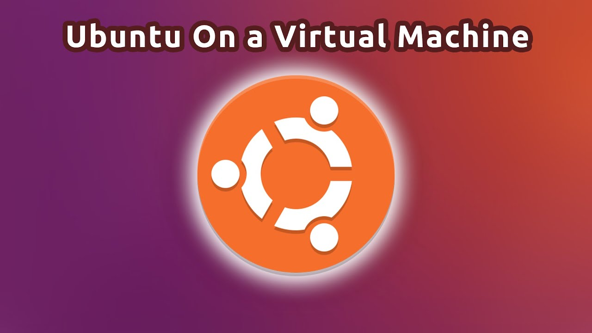

Chapter 1: Introduction to Homelab Setup
Welcome to the world of homelabs, where hands-on learning and practical cybersecurity skills come to life. In this chapter, we embark on a journey to understand the essence of a homelab, its significance, and how it forms the bedrock of experiential learning.
Definition of Homelab: Let's begin by defining what a homelab is. It's not just a physical or virtual space; it's a realm of controlled experimentation and learning that enthusiasts establish within the confines of their homes.
Benefits of a Homelab:
- Hands-On Learning:
- Experimentation:
- Real-World Application:
-
Delve into the immersive world of hands-on learning,
here theoretical knowledge transforms into practical expertise.
Discover the power of actively engaging with technologies, troubleshooting issues, and mastering skills.
-
Homelabs provide a secure playground for experimentation.
Unleash your creativity, try out different configurations, deploy new services, and face challenges head-on without the fear of disrupting production environments.
-
Bridge the gap between theory and practice.
Learn how a homelab allows you to apply your knowledge to real-world scenarios, a critical aspect in the dynamic field of cybersecurity.
Chapter 2: Hardware and Software Requirements

Greetings, homelab enthusiasts! In this chapter, we dive into the nitty-gritty details of setting up your homelab by addressing the fundamental aspects: hardware and software requirements. Think of this as choosing the right tools for your cyber workshop.
Objective: Our goal here is to guide you in selecting the right hardware components that will serve as the backbone of your homelab, ensuring it runs efficiently and effectively.
List of Recommended Components: Let's dissect the hardware anatomy. For the CPU, consider the architecture and clock speed; a multi-core processor is recommended for multitasking. When it comes to RAM, think of it as your homelab's short-term memory—aim for a balance between capacity and speed. Storage, the homelab's archive, benefits from SSDs for speed and HDDs for capacity. Don't forget the network interface; a stable and fast connection is crucial for seamless operations.
- Hardware
- CPU:CPU: A multicore processor (Intel or AMD) with virtualization support (VT-x/AMD-V)
- RAM: At least 8 GB (16 GB or more recommended)
- Storage: SSD or HDD with sufficient space for virtual machines (VMs).
- Network Interface: Wired Ethernet connection.
- Software
- Virtualization Software: Install a hypervisor like VMware vSphere, Proxmox, or VirtualBox.
- Operating System: Install a base OS (Linux or Windows) on your physical machine.
Considerations for Virtualization: Virtualization, the powerhouse of your homelab, demands specific hardware features. Dive into the realm of hardware virtualization support in processors; look for technologies like Intel VT-x or AMD-V. Additionally, consider features like nested virtualization and I/O virtualization to enhance your virtual machine performance.
Chapter 3: Virtual Machine Setup and Networking
Virtualization Software Installation:
- Objective:
- Now that we've handpicked the components, it's time to lay the digital groundwork. This section is all about installing and configuring the virtualization software that will breathe life into your homelab.
- Installation Steps:
- Configuration:
- Assign resources (CPU cores, RAM, storage) based on your needs.
- Choose an OS template (e.g., Ubuntu, Windows).
- Configure network adapters (bridged, NAT, or host-only).
- Set up IP addresses, DNS, and DHCP.
- Create virtual disks (VMDK, VDI, or QCOW2).
- Attach ISO files for OS installation.
- Run Basic Operations on Your VM
- Create VMs:Launch the hypervisor and follow these steps
- Network Settings
- Storage:
Key Points
Experiment with different operating systems: Homelabs are a perfect way to test various operating systems such as different Linux distributions (Ubuntu, Kali Linux, Debian) or varying versions of Windows Server.
Snapshots: Some virtualization software offers a snapshot feature. This allows you to take a "picture" of your VM's state. You can roll back to an earlier snapshot if you encounter issues after making changes.
Resource Allocation: Balance the resources allocated to each VM with your overall computer's specifications. Over-allocating can lead to slow performance of the host machine.
Set up a virtual network:
Understanding virtual network modes: Virtualization software usually offers several network modes for VMs. Here are some common types:
NAT (Network Address Translation): VMs can access the internet through your host computer, but are typically isolated from each other. This can be a good starting point for simple homelabs.
Bridged: VMs obtain an IP address directly from your home network router, acting as if they were independent physical machines. This is useful if you want your homelab to interact with other devices on your local network.
Host-only: VMs can communicate with each other on a private network but cannot access the internet. This is suitable for contained environments where internet access is not needed for your experimentations.
Creating the virtual network: Your virtualization software will have settings to create a virtual network and select its mode. Follow the instructions within your chosen software.
Chapter 4: Homelab Services and Security Measures
This step guides you through installing and configuring essential services that enhance the capabilities and functionality of your homelab environment. These services provide valuable tools for learning and practicing cybersecurity concepts.
Install and Configure a DNS Server:
Benefits: A Domain Name System (DNS) server translates human-readable domain names (like "https://www.google.com/") into numerical IP addresses (like "142.250.67.206") required to access websites and other internet resources. Having a DNS server within your homelab:
Allows you to manage and customize the domain names used within your virtual machines.
Provides a realistic environment for practicing DNS-related security concepts.
Facilitates easier access and administration of your VMs within the homelab network.